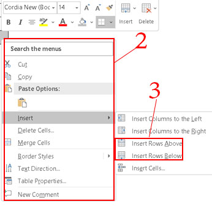

3.การปรับแต่งตาราง
ก่อนปรับแต่งตาราง สิ่งสำคัญที่ต้องทำอันดับแรก คือ วิธีการเลือกเซลล์แถวและคอลัมน์ มีขั้นตอนดังนี้
3.1 การเลือกเซลล์
|
1.นำเมาส์วางมุมล่างซ้ายของเซลล์มีลูกศรสีดำ
2.คลิกเลือกเซลล์ให้มีแถบสีเทา (หากต้องการหลายเซลล์ ลากเมาส์ต่อไปยังเซลล์สุดท้ายที่ต้องการ)
|
3.2การเลือกแถว
|
1.นำเมาส์วางมุมล่างซ้ายของแถวลูกศรเอียงขวา แล้วคลิกเมาส์เลือกแถว
2.ปรากฏแถบสีเทา(หากต้องการหลายแถวคลิกลากเมาส์ตรง ๆ ลงมาเรื่อย ๆจนถึงแถวที่ต้องการ) |
3.3การเลือกคอลัมน์
|
1.นำเมาส์วางด้านบนของคอลัมน์ จะมีลูกศรสีดำ คลิกเลือกคอลัมน์แรก
2.จะปรากฏแถบสีเทาทั้งคอลัมน์
3.หากต้องการหลายคอลัมน์ คลิกเมาส์ลากไปทางขวาจนถึงคอลัมน์สุดท้าย |
3.4การเพิ่มแถวด้วยคีย์บอร์ด เมนูคำสั่ง ปุ่มเครื่องมือ
การเพิ่มแถวด้วยคีย์บอร์ด
|
1.วางเคอร์เซอร์อยู่ที่เซลล์สุดท้ายของตาราง (Table)
2.กดปุ่ม <Tab> ที่คีย์บอร์ด
3.แถวจะเพิ่มขึ้น 1 แถว (ทดลองกดปุ่ม <Tab>ไปเรื่อย ๆ 2-3 บรรทัด) |
การเพิ่มแถวด้วยเมนูคำสั่ง
|
1.เลือกแถวให้มีแถบสีเทา หรือวางเคอร์เซอร์ในช่องเซลล์
2.คลิกเมาส์ขวา ปรากฏเมนูลัด
3.คลิก Insert>Insert Rows Above หรือ Insert Rows Below (แทรกแถวข้างล่าง) |
 |
การเพิ่มแถวด้วยปุ่มเครื่องมือ
1.คลิกเมาส์ที่เครื่องหมายบวก เพื่อแทรกแถว
2.คลิกขวาที่ช่องเซลล์ใดก็ได้ ปรากฏเมนูลัด
3.คลิกปุ่ม Insert
4.คลิกเลือกInsert Above(แทรกแถวด้านบน) หรือ Insert Left (แทรกแถวด้านซ้าย) หรือInsert Right (แทรกแถวด้านขวา) |
|
|